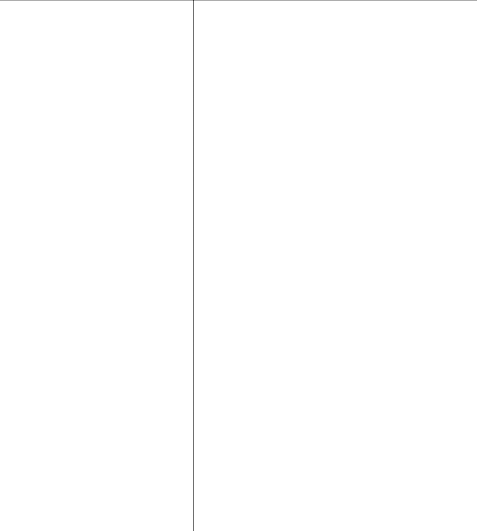

Beginning C++ Through Game Programming, Third Edition

Michael Dawson
A part of Cengage Learning


Australia . Brazil . Japan . Korea . Mexico . Singapore . Spain . United Kingdom . United States


Beginning C++ Through Game Programming, Third Edition
Michael Dawson
Publisher and General Manager, Course Technology PTR: Stacy L. Hiquet
Associate Director of Marketing:
Sarah Panella
Manager of Editorial Services:
Heather Talbot
Marketing Manager: Jordan Castellani Senior Acquisitions Editor: Emi Smith Project Editor: Jenny Davidson Technical Reviewer: Maneesh Sethi
Interior Layout Tech: MPS Limited, a Macmillan Company
Cover Designer: Mike Tanamachi Indexer: Kevin Broccoli Proofreader: Michael Beady
© 2011 Course Technology, a part of Cengage Learning.
ALL RIGHTS RESERVED. No part of this work covered by the copyright herein may be reproduced, transmitted, stored, or used in any form or by any means graphic, electronic, or mechanical, including but not limited to photocopying, recording, scanning, digitizing, taping, Web distribution, information networks, or information storage and retrieval systems, except as permitted under Section 107 or 108 of the 1976 United States Copyright Act, without the prior written permission of the publisher.
For product information and technology assistance, contact us at
Cengage Learning Customer & Sales Support, 1-800-354-9706
For permission to use material from this text or product, submit all requests online at www.cengage.com/permissions Further permissions questions can be emailed to permissionrequest@cengage.com
All trademarks are the property of their respective owners. All images C Cengage Learning unless otherwise noted.
Library of Congress Control Number: 2010928011
ISBN-13: 978-1-4354-5742-3
ISBN-10: 1-4354-5742-0
eISBN-10:1-4354-5743-9
Course Technology, a part of Cengage Learning
20 Channel Center Street Boston, MA 02210
USA
Cengage Learning is a leading provider of customized learning solutions with office locations around the globe, including Singapore, the United Kingdom, Australia, Mexico, Brazil, and Japan. Locate your local office at: international.cengage.com/region
Cengage Learning products are represented in Canada by Nelson Education, Ltd.
For your lifelong learning solutions, visit courseptr.com
Visit our corporate website at cengage.com
Printed in the United States of America 1 2 3 4 5 6 7 12 11 10
To my sweet, tough cookie—for all of the help, support, understanding (and distractions) you offered.
And to Ariella Saraswati Dawson, a girl who’s even more impressive than her name. I look forward to rediscovering the world with you, Monkey.